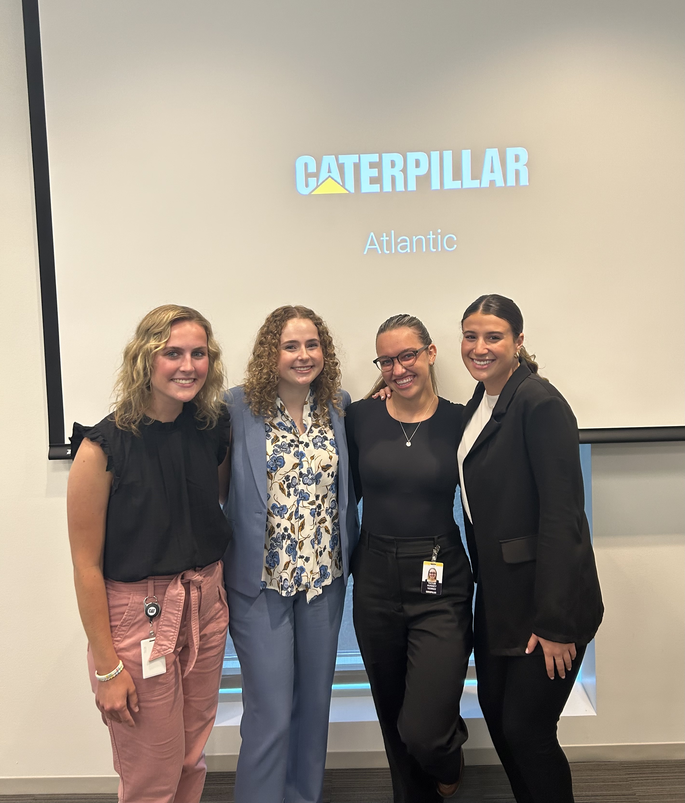

In the last three semesters of my college career, I was selected as one of the top 20 marketing students to participate in a field immersion program called the Marketing Institute to work on marketing consulting projects for real clients.
In the Fall of 2023 and this Spring, I have been working with Bobbi-Toads, a children's apparel company. My team is working on conducting primary market research, in the form of a Qualtrics survey and focus groups, to understand parents' preferences in purchasing children's footwear and opinions about Bobbi-Toads products.
In the Spring of 2023, my team created rebranding and strategy guidelines for Growthland and Good Shepherd Center, both local Iowa City businesses. My team's work was chosen by Growthland to be implemented as part of its new marketing strategy.
Through courses at Tippie, especially through the Business Analytics and Information Systems major, I have acquired the following Technical Skills:
Software
Proficiency
Canva
Highly Proficient
MS Excel
Highly Proficient
MS PowerPoint SlideMaster
Highly Proficient
Orange Data Mining
Proficient
Python
Proficient
Qualtrics
Proficient
R
Highly Proficient
SQL
Proficient
Tableau
Proficient
Internship Experiences
For the past two years, I have held two different Marketing Intern Roles at Caterpillar Inc. in Peoria, IL. I have been able to learn about the company's matrix, business model, and strategy by being able to work with two different divisions and teams.
Since May of 2023, I have worked as a Marketing Strategy Intern within the Construction Industries and Services Division on the Global Accounts Team. The Global Accounts team sells aftermarket parts and services to the largest construction customers across the globe. In this position I have:
Developed a commercial-oriented dashboard, quantifying the value customers receive from Caterpillar and Cat Dealers, interfacing with legal, pricing, and digital divisions
Implemented a strategy refresh to communicate team identity internally, to dealers, and to customers
Collaborated with managers across the division to set 2024 business planning targets
Collected and organized VOC and VOB from Account Managers to begin customer journey maps
In the Summer of 2022, I worked as a Digital Product Marketing Intern within Cat Digital. In this position I:
Tracked dealer engagement during the rollout of Cat Foresight to create funnels and targeted communications
Implemented a new process for Cat Inspect users to submit feedback that could easily be coded as PBIs
Designed and refreshed marketing materials with the consultation of stakeholders

Group of Caterpillar Interns and I at a case competition in Houston, TX last summer

{kind=link}